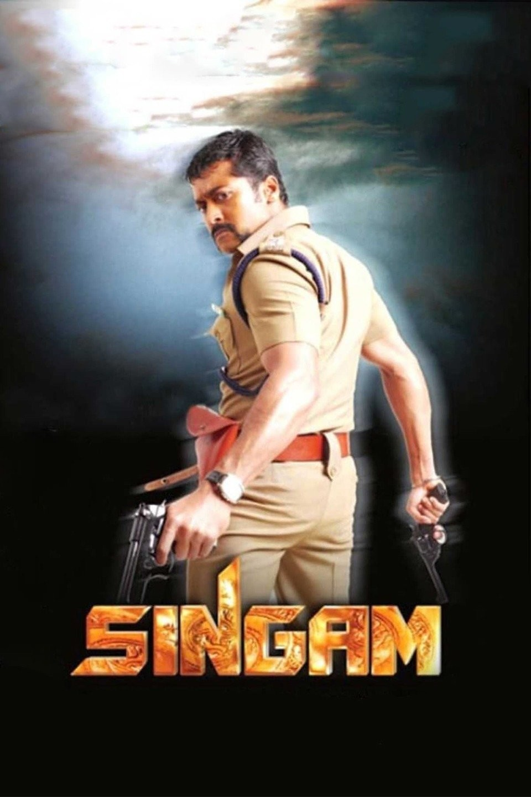

The Singam series, also known as the Anjan movies in some regions, features Suriya as the fierce and righteous police officer, Durai Singam.
The franchise includes three films: Singam (2010), Singam II (2013), and Singam 3 (2017), directed by Hari.
These action-packed films are known for their high-octane stunts, intense dialogues, and strong storyline centered around fighting crime and corruption.
Suriya's portrayal of the fearless cop became iconic, making the series one of the most successful in Tamil cinema.
The Singam movies have also inspired several remakes in other Indian languages.